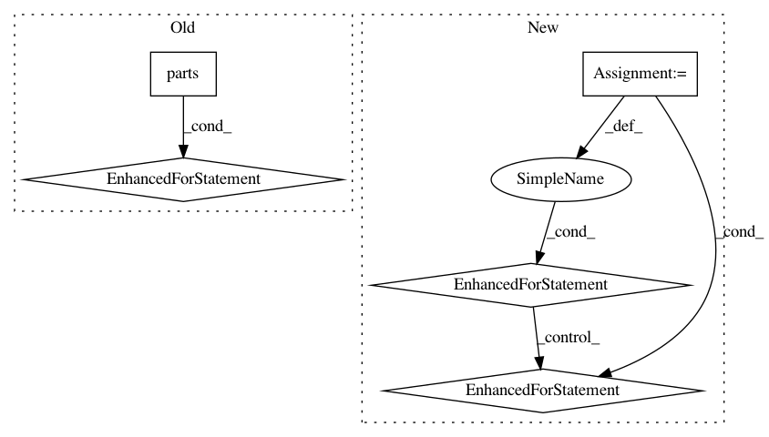

a7949425b0ff59786c9baf976e112ac2e07f3f77,nalaf/learning/taggers.py,StubSameSentenceRelationExtractor,annotate,#StubSameSentenceRelationExtractor#Any#,131
Before Change
def annotate(self, dataset):
from itertools import product
for part in dataset.parts():
for ann_1, ann_2 in product(
(ann for ann in part.annotations if ann.class_id == self.entity1_class),
(ann for ann in part.annotations if ann.class_id == self.entity2_class)):
if part.get_sentence_index_for_annotation(ann_1) == part.get_sentence_index_for_annotation(ann_2):
part.predicted_relations.append(
Relation(ann_1.offset, ann_2.offset, ann_1.text, ann_2.text, self.relation_type))
After Change
self.sentence_splitter.split(dataset)
self.tokenizer.tokenize(dataset)
for document in dataset:
for part in document:
for ann_1, ann_2 in product(
(a for a in part.annotations if a.class_id == self.entity1_class),
(a for a in part.annotations if a.class_id == self.entity2_class)):
if part.get_sentence_index_for_annotation(ann_1) == part.get_sentence_index_for_annotation(ann_2):
rel = Relation(ann_1.offset, ann_2.offset, ann_1.text, ann_2.text, self.relation_type)
part.predicted_relations.append(rel)
class StubSameDocumentPartRelationExtractor(RelationExtractor):
def __init__(self, entity1_class, entity2_class, relation_type):
super().__init__(entity1_class, entity2_class, relation_type)
In pattern: SUPERPATTERN
Frequency: 3
Non-data size: 5
Instances
Project Name: Rostlab/nalaf
Commit Name: a7949425b0ff59786c9baf976e112ac2e07f3f77
Time: 2016-11-03
Author: i@juanmi.rocks
File Name: nalaf/learning/taggers.py
Class Name: StubSameSentenceRelationExtractor
Method Name: annotate
Project Name: Rostlab/nalaf
Commit Name: 9c05426517a2783d03ec88197b27706e9f877b12
Time: 2017-02-19
Author: i@juanmi.rocks
File Name: nalaf/preprocessing/parsers.py
Class Name: SpacyParser
Method Name: parse
Project Name: Rostlab/nalaf
Commit Name: 88935c4463006f2fe8f2cee1d5b893461589ca24
Time: 2017-03-25
Author: i@juanmi.rocks
File Name: nalaf/structures/data.py
Class Name: Dataset
Method Name: validate_entity_offsets